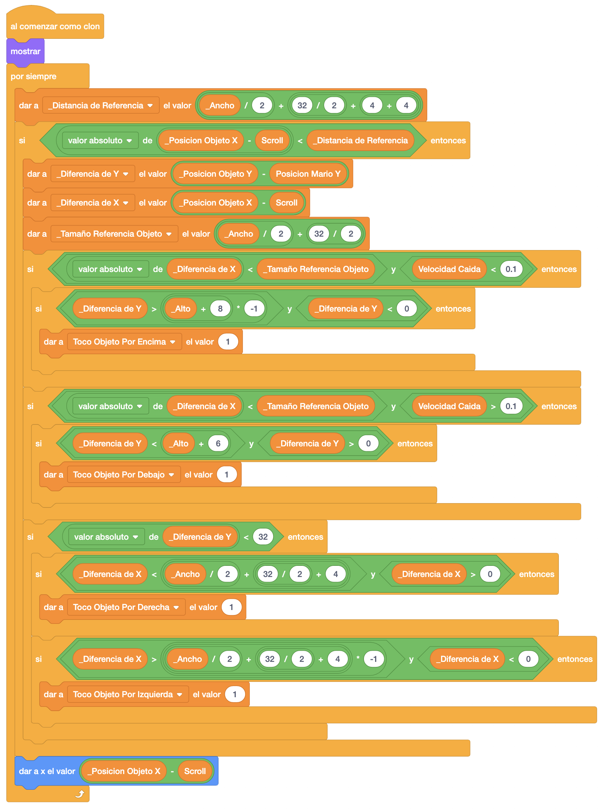
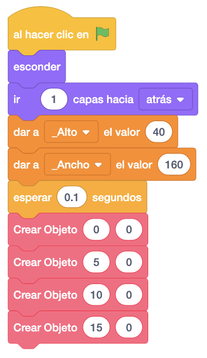
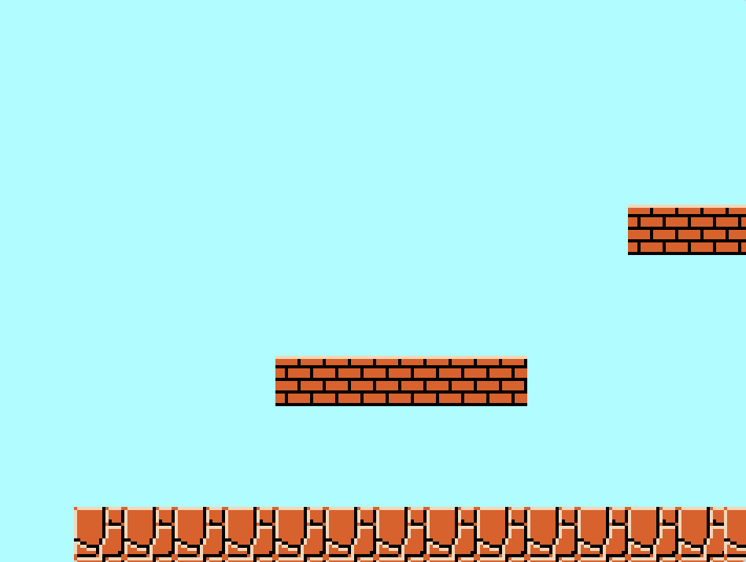
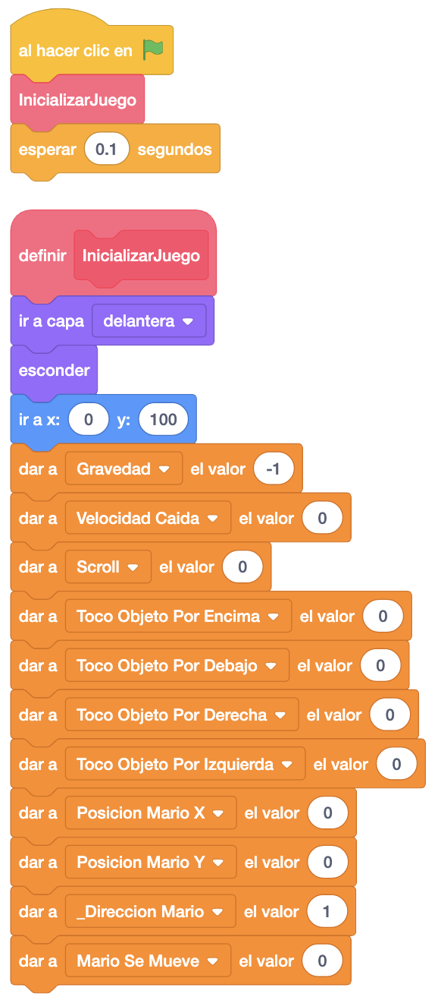
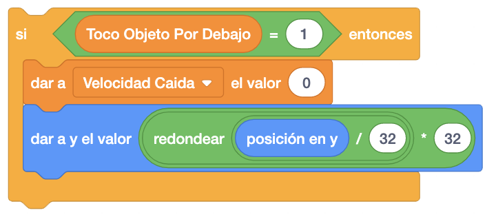
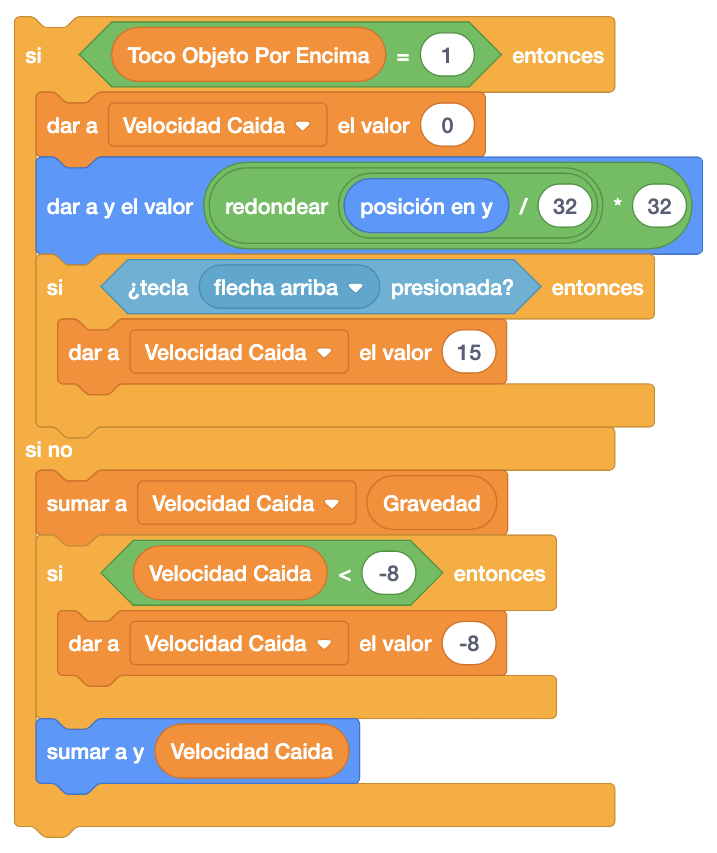
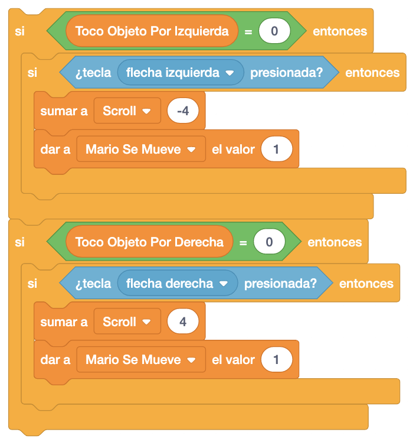
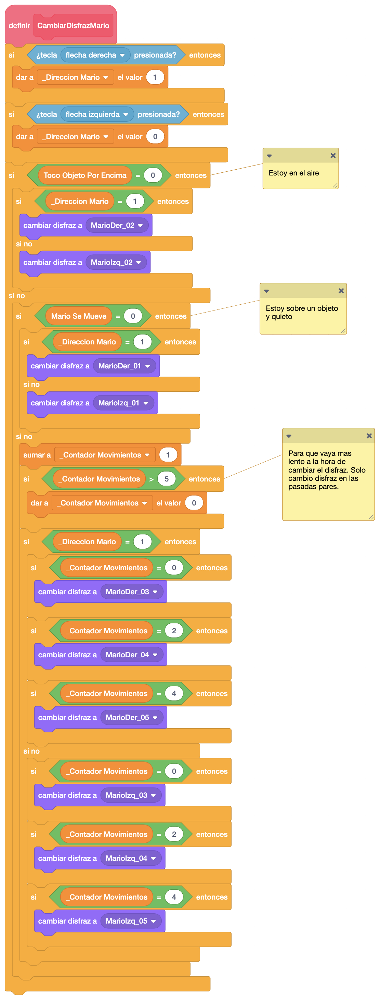
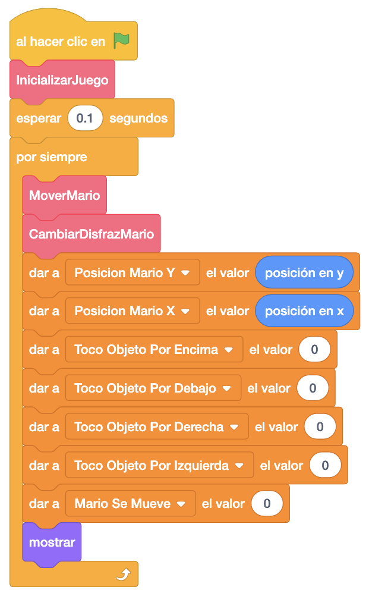

En esta fase, le proporcionaremos al alumno la versión terminada del Mario con el suelo y la plataforma
funcionando perfectamente.
Este juego lo pueden descargar pinchando
aquí.
Le explicamos el funcionamiento del juego que le hemos pasado teniendo en cuenta lo siguiente.
A estos objetos, lo que hacemos al empezar es definir dos variables locales "_Alto" y "_Ancho" donde guardaremos las dimensiones de los objetos. Estas dimensiones podemos verlas en la pantalla de los disfraces del objeto.

A continuación crearemos el objeto en la pantalla. Para ello, vamos a utilizar un nuevo bloque "Crear Objeto"
al que pasaremos como argumento las posiciones "X" e "Y" donde queremos crear el objeto, pero referenciadas a
una matríz de 32 posiciones, para que sea más sencillo ubicar los objetos en la pantalla. La matriz sería de
32 posiciones porque la mayoría de los objetos tienen un tamaño de 32 o múltipo de 32, incluido Mario.
En el objeto "Crear Objeto", lo que haremos será guardar las posiciones "X" e "Y" del objeto en dos variables
locales, le damos las coordenadas al objeto y creamos el clon.

La pantalla nos quedaría así.

Si quisiéramos crear otra plataforma, bastaría con llamar al bloque "Crear Objeto" con las nuevas coordenadas y se crearía automáticamente.

La pantalla con dos plataformas nos quedaría así.

Añadiremos ahora el código necesrio para saber si Mario toca el objeto por encima, por debajo, por la
izquierda o por la derecha. Como resultado de este código, tendremos en las variables globales "Toco Objeto
Por Encima", "Toco Objeto Por Debajo", "Toco Objeto Por Derecha" y "Toco Objeto Por Izquierda" el valor "1"
cuando esté tocando al objeto por ese lado.
Además, le añadiremos la parte del scroll, para simular que al mover a Mario, lo que se mueva es el resto de
objetos y no Mario. Posteriormente, veremos como guardar en la variable "Scroll" lo que movemos a la derecha
o la izquierda a Mario. Esta variable la utilizaremos para recolocar cada uno de los objetos (excepto a Mario)
en nuestro escenario.

Es el turno del suelo. Para ello, vamos a copiar toda la programación que hemos hecho en la plataforma (ya
que la hemos hecho para que nos funcione en cualquier objeto) y haremos un par de modificaciones.
Para copiarlo, bastaría con arrastrar cada pila de código al otro objeto.
Lo que tendríamos que cambiar serían las variables "_Alto" y "_Ancho" con los valores del suelo y la llamada a
"Crear Objeto", que la haremos con las posiciones donde queremos crear el suelo.

La pantalla del juego nos iría quedando de la siguiente forma.

Es la hora de programar a Mario. Lo primero que haremos será llamar a un nuevo bloque que tendremos que crear
para darle un valor inicial a todas las variables que afectan al juego además de prepara el juego para empezar.
Le llamaremos "Inicializar Juego".
Las variables que inicializaremos son:
- "Gravedad": Una variable con valor -1 que será lo que restaremos de las posiciones "Y" para hacer el
efecto de la gravedad.
- "Velocidad Caida": La utilizaremos para hacer el salto de Mario y hacer el efecto de un salto real
(al subir y bajar).
- "Scroll": La utilizaremos para guardar lo que Mario se mueve en el eje "X".
- "Toco Objeto Por Encima", "Toco Objeto Por Debajo", "Toco Objeto Por Derecha" y "Toco Objeto Por
Izquierda": Variables para saber si Mario está tocando algún objeto desde el punto de vista de Mario.
- "Posición Mario X" y "Posición Mario Y": Guardaremos aquí las posiciones "X" e "Y" de Mario en todo
momento.
- "_Dirección Mario": Esta variable local es para saber en qué dirección se mueve Mario. Las variables
locales las creamos con el simbolo "_" delante del nombre para poder identificarlas rápidamente.
- "Mario Se Mueve": Nos indica si Mario se está moviendo o no".

Ahora vamos a crear un nuevo bloque al que llamaremos "MoverMario" donde haremos toda la parte del movimiento
de Mario.
Haremos varias cosas en este bloque. Lo primero será que si estamos tocando por debajo de algún objeto ("Toco
Objeto Por Debajo" = 1) pararemos a Mario y lo cuadramos en nuestra cuadrícula imaginaria de 32 posiciones.

Ahora, si estamos tocando encima de algún objeto ("Toco Objeto Por Encima" = 1) no seguimos bajando para que
se quede encima y cuadramos a Mario en nuestra cuadrícula de 32 posiciones. Además, solamente en este caso,
si pulsamos la tecla arriba, saltaremos (le daremos valor a la variable "Velocidad De Caida").
En el caso en el que no estemos tocando encima de ningún objeto, seguiremos cayendo más rápido, siempre y cuando
la variable "Velocidad De Caida" no supere el valor "-8", que será la velocidad máxima a la que caiga Mario.

Finalmente controlaremos que si no estamos tocando el objeto por la izquierda, si hemos pulsado la tecla
izquierda, haciendo que se mueva (con la variable "Scroll") y activando la variable "Mario Se Mueve".
Lo mismo haremos hacia la derecha.

Vamos a crear ahora un nuevo bloque donde controlaremos el disfraz que tiene que llevar Mario en cada momento.
Le llamaremos "CambiarDisfrazMario" y lo primero que controlaremos será si tenemos la flecha derecha o la
izquierda pulsada para asignarle la dirección correcta.
A continuación evaluaremos si estoy encima de un objeto o no. Si no lo estoy, le pongo el disfraz del salto
dependiendo de la dirección.
Si estoy sobre un objeto, controlo si me estoy moviendo o no. Si no me muevo, pongo el disfraz de quieto
dependiendo de la dirección.
Si me estoy moviendo, controlo que solo cambie disfraces en las pasadas pares, y cambiamos a los disfraces de
movimiento dependiendo de la dirección.
El bloque quedaría de la siguiente forma.

Tanto el bloque "MoverMario" como el bloque "CambiarDisfrazMario" los llamaremos desde el bloque inicial y
dentro de un bucle por "Por Siempre" ya que tanto el movimiento como los disfraces tenemos que hacerlos
continuamente.
Además de la llamada a estos bloques, dentro del bucle inicial, también guardaremos la posición "X" e "Y" de
Mario en las variables globales que previamente inicializamos a 0 en el bloque "InicializarJuego".
También pondremos a cero las 4 variables de "Toco Objeto" para que se vuelvan a recalcular continuamente.
Por último, también pondremos a 0 la variable que indica que nos movemos para que también se recalcule
continuamente y mostramos a Mario.

El juego iría quedando así.
Podemos ver el juego terminado con las plataformas, el suelo y Mario pulsando aquí.